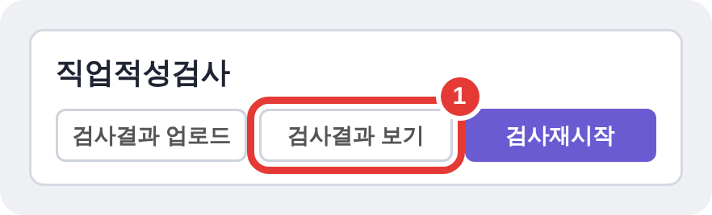

STEP 01 · 자기이해
1-4 심리검사
결과정리
검사 결과를 활동지 ‘나의 진로 보물지도’에 옮겨 적어요
jinro.goedu.kr
매탄중학교 진로상담실
1
검사 결과 화면 열기
1-4 결과정리 · 1 / 5

- AI 진로설계 → 자기이해에서 검사 카드의 [검사결과 보기]를 눌러요.
- 직업흥미검사(H)는 태블릿에 저장한 PDF 결과지를 열어요.
- 결과는 점수가 높은 순서대로 살펴봐요.
2
01 직업흥미검사(H)
1-4 결과정리 · 2 / 5
흥미 유형 · 관심 직업
결과 화면에서 찾기
▶
활동지에 적기
일반 흥미 유형 점수 1·2위
▶
일반 흥미 유형 1·2순위 + 관심 직업 2개
선호 직업군(흥미) 1·2위
▶
선호 직업군 1·2순위 + 관심 직업 2개
두 결과 비교하기
▶
두 결과의 일치 정도
3
02 직업적성검사
1-4 결과정리 · 3 / 5
강점 능력 · 관심 직업
결과 화면에서 찾기
▶
활동지에 적기
점수가 높은 능력 3가지
▶
높은 적성 ① ② ③
점수가 가장 낮은 능력
▶
가장 낮게 나온 능력
추천·관련 직업
▶
관심 직업 2개
4
03 직업가치관검사
1-4 결과정리 · 4 / 5
중요한 가치 · 관심 직업
결과 화면에서 찾기
▶
활동지에 적기
점수가 높은 가치 3가지
▶
상위 직업가치관 ① ② ③
내 생각에 중요한 가치
▶
내가 중요하게 생각하는 가치관 3개
추천·관련 직업
▶
관심 직업 2개
5
활동지 ‘나의 진로 보물지도’
1-4 결과정리 · 5 / 5

- 01 · 02 · 03 칸에 검사별로 옮겨 적어요.
- 상위 결과부터 적고, 결과와 내 생각을 비교해 봐요.
- 아래 ‘탐색할 직업’은 1-5에서 채워요.
활동지 PDF·HWP는 매뉴얼 1-4 페이지에서 내려받아요.
결과정리 끝! 꼭 기억해요
TIP
점수가 높은 결과부터 옮겨 적기
비교
검사 결과와 내 생각이 같은지 살펴보기
다음
활동지를 들고 1-5 황금지점 찾기로!
검사를 1개만 한 학생은 해당 칸만 채우고, 나머지는 검사 후에 채워요.
1-4 결과정리 한 장용